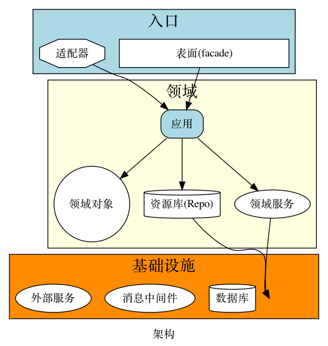

DDD 领域驱动设计入门
应对软件复杂性
Contents
- DDD 是什么 ?
- 为什么要学习 DDD ?
- 如何实施 DDD ?
- More...
DDD 是什么?
初识 DDD
"DDD" = Domain Driven Design
"领域驱动设计"
一套指导软件设计与实施的方法论
关键术语
| 术语 | 意义 | 说明 |
|---|---|---|
| 领域 | 问题空间 | 某一类业务问题, 比如"如何发布内容" |
| 限界上下文 | 解空间 | 对应于某一个领域的解决方案, 比如内容发布系统 |
| 领域模型 | 对领域内的对象建模, 封装业务逻辑 | 内容发布系统中的"评论"对象, 具有删除动作 |
| 实体对象 | 领域模型的一种, 具有全局唯一性 | "发布系统"上下文中的"评论"对象是实体对象 |
| 值对象 | 领域模型的一种, 生命周期短, 不唯一 | "发布系统"上下文中的"帖子"对象的内容文本是值对象 |
举例说明
对于"社区内容"问题(领域):
我们定义出"帖子上下文"(限界上下文);
在该上下文中, 我们有帖子这一(实体)对象;
该对象可能包含的属性有 "帖子标题", "帖子内容"
这些属性都是值对象
为什么要学习 DDD?
产研实践的缺陷
- 业务定义不清晰
- 业务用语有歧义
- 业务逻辑丢失
- 业务扩展困难
DDD 的优点
- 以业务为核心, 围绕业务开展活动
- 建立全员一致的业务理解
- 更好的团队投入与参与(产品, 运营, 开发者, etc)
- 更好的发掘/梳理业务价值, 聚焦高价值的业务
- 领域模型即业务逻辑
- 代码更加易于维护,扩展;(可能)更高的代码质量
如何实施 DDD?
- 梳理业务逻辑
- 输出共识
- 为领域建模
- 完整架构
1. 梳理业务逻辑
这是 ddd 开始阶段要做的第一件事
我们可以使用名为"EVENT STORMING"的技术来帮助我们梳理业务
EVENT STORMING 步骤参考
- 确定要讨论的业务
- 召集相关方聚在有白板的会议室中
- 通过brainstorm 提出业务的事件, 贴上白板
- 如果事件 A 触发了事件 B, 连接它们
- 重复3-4步
最后我们就得到了业务的全部流转逻辑
2. 输出共识
共识即领域通用语言
通用语言包含:
- 领域 和 限界上下文
- 用语词典
- 业务流程图
领域 & 限界上下文
领域= 问题空间
限界上下文= 解空间 需要由团队人为划定边界
例如, 对于帖子合集功能
"领域" = 帖子合集的所有功能点
"限界上下文" = "合集上下文", 包含
- 对合集操作的实际工作流程(交互与代码实现)
- 对帖子与合集关系的操作的实际工作流程
用语词典
"合集"领域的词典
| 用语 | 说明 |
|---|---|
| 合集 | 用于组织用户发布的帖子的一种承载物 |
| 用户 | 一个用户即代表一个社区账号 |
| 帖子 | 社区单个用户单次生产内容的主要形式, 可以包含文本,图片,视频多种内容 |
| ... | ... |
流程图

conclusion 1
DDD 以业务为中心, 业务即Domain(领域)
"理解领域"是实施 DDD 的第一步
达成并输出共识十分重要
3. 为领域建模
将业务逻辑封装在领域模型中!
class SomeService
"值对象"
- 不唯一
- 生命周期短
- 不可变
试看一例
data class Title(
val title: String
) : SimpleValueObject<Title> {
init {
if (title.isBlank()) {
throw BadRequestException()
}
if (title.length > 30) {
throw BadRequestException()
}
}
}
data class CompilationID(
val id: Long
) : SimpleValueObject<CompilationID> {
init {
if(id <= 0) {
throw BadRequestException()
}
}
}
"实体对象"
- 唯一性/身份
- 生命周期长
- 可变
试看一例
class Compilation private constructor(
val compilationID: CompilationID,
val author: Author,
private var title: Title,
private var description: Description?,
private var cover: String?,
private var status: CompilationStatus,
private var createTime: Long
) : SmartEntity<Compilation>() {
fun title() = title
fun updateTitle(newTitle: Title) {
title = newTitle
refreshTouchTime()
}
/*
......... some other detail
*/
}
创建纯洁的领域对象
忘记 DB, 领域优先

| NO | YES |
|
|
创建纯洁的领域对象
对象对应于上下文中的一个清晰概念
| NO | YES |
|
|
创建纯洁的领域对象
对象只有单一的职责(SRP)
| NO | YES |
|
|
创建纯洁的领域对象
对象不知道其职责以外的任何知识
| NO | YES |
|
|
conclusion 2
将所有业务逻辑封装到领域模型中
创建纯洁的领域对象
架构概述
原则
- 将 IO 推到系统边界
- 避免领域污染
- 应用 CQRS 模式
架构概述
示例

conclusion 3
架构/基础设施应该与领域模型解耦
To sum it up
DDD 是什么?
以业务为中心的软件设计和实施方法论
为什么要学习 DDD ?
- 产研实践损害了业务完整性
- DDD 框架围绕业务开展活动
如何实施 DDD?
- 梳理业务逻辑
- 建立并输出业务共识
- 设计领域模型
- 实现架构中的组件
More
Q & A
References
if you're still interested
欢迎阅读 DDD 实战记录
以及参考社区合集实现